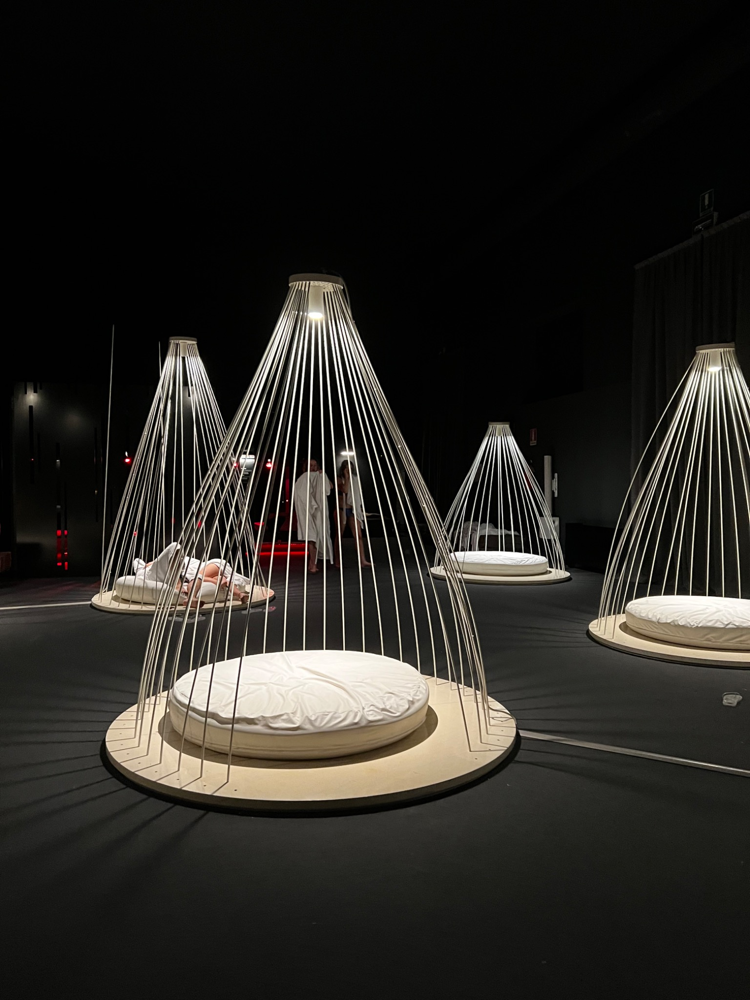

Rome
Historic landmarks, walkable streets, and enough visual detail to make even a short trip feel full.
City travel
City destinations work well when the goal is variety, shorter travel time within the day, and a balance between sightseeing and comfort.
Historic landmarks, walkable streets, and enough visual detail to make even a short trip feel full.

Good for galleries, design, and a cleaner, more polished city atmosphere.